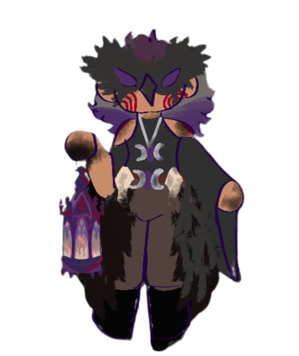
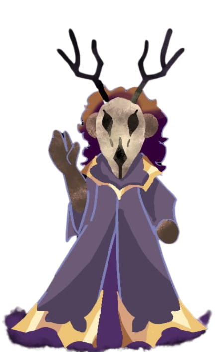

Um pouco mais para vocês!
-Livros-
- A Magia de Lilith: Deusa ou Demônio?
- Bruxaria e Satanismo: História e Práticas
- Escola Iniciática de Satanismo Paracientífico
- Grimório de Bruxaria Diabólica
- Quimbanda Luciferiana: Culto e Práticas
- Feitiços
com Velas: Guia Prático de Hoodoo
- Bruxaria:
Magia Negra e do Caos
- Feitiços
e Rituais Mágicos Essenciais
- Rituais
Poderosos de Exu e Pomba Gira
Todos vindos do [SCRIBD].
-Dúvidas-
O que essa página?
Essa página surgiu como um trabalho proposto pela diciplina de Web Desing no Instituto Federal para veer se os estudantes conseguem por em prática tudo ensinado na diciplina.
O que pretendem com esse projeto?
Fazer um site que posibilite um local de fácil acesso à informações difíceis de serem encontradas sobre religiões, reunir conhecimentos, promover a diversidade e construir uma comunidade sólida e segura.
Porém, ainda somos estudantes e estamos em processo de aprendizado! Provalmente esse projeto ficara parado por bastante tempo, logo ficariamos felizes com contriboentes e sim, você pode se inspirar em nosso site! Só de os créditos devidamente e entre em contato com a gente via e-mail. :]
-A desings originais no site?-
Sim! A logo, o Jack, as capas, o cursor do mousse, o bilhete e até alguns fundos são feitos por nós! Atráves dos programas Canva, Ibis Paint, entre outros. Claro muita parte é somente pintura do CSS e imagens com licença creative commom do google, mas nesses casos damos os devidos créditos e fontes de onde retiramos as informações. Temos orgulho de dizer que não usamos IA para gerar nenhuma arte de forma direta, caso alguma imagem seja dessa fonte pedimos nossos mais sinceros perdões aos artistas!
Por que tantas coisas relacionadas ao hallowen?
Simplismente porque nós AMAMOS O HALLOWEN! Temos gostos bem relacionados nessa área e a inpiração que pensamos foi na data comemorativa (pois o trabalho foi passado no mês de outubro), Dark Fantasy, nossas próprias crenças e principalmente nosso amor pela estética mais sombria da arte.
-Créditos-

Pesquisador: Diniz
Designer: Diniz
